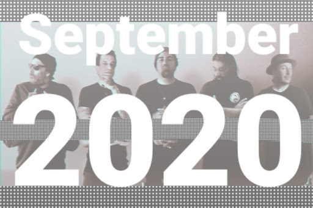

October 1, 2020

Deftones: my favorite songs
aka My Personal Playlist: The Hits of September 2020
Listen on Spotify
Deftones is my all-time favorite band and they dropped their latest album on the 25th! The September playlist was very different until that moment. But little 14 year-old me - that angsty midly depressed kid from 1999 that made playlists with a cassette recorder - took over and compiled my favorite Deftones songs (in no particular order because I love them all).
I regret nothing.
- Urantia (Ohms, 2020)
- The Spell of Mathematics (Ohms, 2020)
- Genesis (Ohms, 2020)
- Radiant City (Ohms, 2020)
- Phantom Bride (Gore, 2016)
- Prayers/Triangles (Gore, 2016)
- Gore (Gore, 2016)
- Graphic Nature (Koi No Yokan, 2012)
- Swerve City (Koi No Yokan, 2012)
- What Happened to You? (Koi No Yokan, 2012)
- No Ordinary Love (Covers, 2011)
- Drive (Covers, 2011)
- Do You Believe (Covers, 2011)
- CMND/CTRL (Diamond Eyes, 2010)
- Rocket Skates (Diamond Eyes, 2010)
- You've Seen the Butcher (Diamond Eyes, 2010)
- Combat (Saturday Night Wrist, 2006)
- Rats!Rats!Rats! (Saturday Night Wrist, 2006)
- Rapture (Saturday Night Wrist, 2006)
- Lucky You (Deftones, 2003)
- Needles and Pins (Deftones, 2003)
- Hexagram (Deftones, 2003)
- Back to School (White Pony, 2000)
- Elite (White Pony, 2000)
- Digital Bath (White Pony, 2000)
- Around the Fur (Around the Fur, 1997)
- My Own Summer (Around the Fur, 1997)
- Rickets (Around the Fur, 1997)
- Minus Blindfold (Adrenaline, 1995)
- Engine No.9 (Adrenaline, 1995)
- Nosebleed (Adrenaline, 1995)